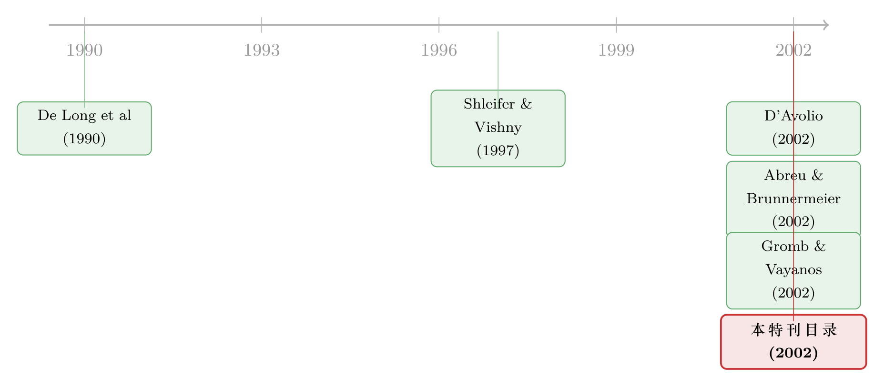

一页目录，八篇论文：「套利」被正式写上「有限」二字的那一年
本文读的不是一篇论文，而是 Journal of Financial Economics 2002 年「Limits on Arbitrage」专辑的目录页（第 169–507 页）。它只有八行标题、八篇文章，却悄悄地为一整套思想立了块界碑：价格之所以会「错」，不是因为没人看见，而是因为看见的人——也会怕、也缺钱、也借不到那张要卖空的股票。
1 一页纸上的「叛逆」
先从一个教科书命题说起。
有效市场假说 (efficient markets hypothesis) 的核心论证里，从来不需要「所有投资者都理性」。它只需要一句更弱的话：哪怕市场上挤满了情绪化的噪声交易者 (noise traders)，只要还有一小撮冷静、逐利的套利者 (arbitrageurs)，他们就会像水填平洼地一样，把任何偏离基本面的价格重新压回去。错误定价 (mispricing) 是套利者的免费午餐，而免费午餐不会久留。于是价格永远是对的。
这套逻辑优雅得近乎不容置疑。可是如果你翻开 2002 年 JFE 的这一期，会先看到一行标题——Limits on Arbitrage（套利的限度）——然后是八篇文章整整齐齐地排在下面，从第 171 页一直铺到第 506 页，三百多页的篇幅，讲的其实是同一件「叛逆」的事：
那只「填平洼地的手」，本身是会抖的。
这就是这页目录真正的分量。它不是一份普通的卷期清单，而是一个研究纲领的集体亮相。把这八篇文章并排放在一起，你会发现它们像八根支柱，共同撑起了一个后来主导了二十年行为金融的命题：套利不是无摩擦、无成本、无风险的;恰恰相反，套利者受资本约束、受借券市场约束、受「不知道别人什么时候才肯一起动手」的约束。而正是这些约束，让错误定价得以存在、扩大、甚至持续很久很久。
这是本博客「过刊考古」系列的又一篇。和它最像的是另一张目录页——一期关于公司治理的 JFE 专辑（可参见《八行标题：一张目录，如何画下 2003 年公司治理的全景》）。一张目录能告诉你的，往往是「这个学科此刻在集体想什么」。
2 套利为什么会「有限」
接着，一个自然的问题是：套利到底卡在哪里？
最经典的回答，来自这页目录所致敬的那篇同名祖师爷之作——Shleifer 与 Vishny 1997 年的 The Limits of Arbitrage。他们的洞见简单却致命：现实中的套利，不是由无数个「自带无限资金的原子」完成的，而是由少数专业资管人代理完成的。代理就意味着，套利者花的不是自己的钱，而是客户的钱。
于是麻烦来了。假设一只股票被低估，套利者买入做多。如果价格在收敛之前先进一步偏离——错得更离谱——他账面就会先亏损。而账面亏损会吓跑客户，客户赎回会逼他在最坏的时点平仓。换句话说：正是在套利机会最诱人的时候，套利者手里的弹药最少。这与「价格越偏离、纠正力量越强」的教科书直觉完全相反。
把这条逻辑稍微往前推一步，就能看见一个更深的裂缝：套利不再是「无风险」的。它带着风险——而且是一种很特别的风险，它不来自基本面，而来自其他套利者的行为、来自融资条件、来自借券市场。这种风险一旦被定价，错误定价就有了存活的土壤。关于「套利本身有风险」如何反过来解释了价值溢价，本博客另有一篇专门的讨论（可参见《无风险的钱没人捡，是因为捡它的人也会怕——重读「套利风险」与价值溢价》）。
这页目录里的八篇文章，本质上就是把 Shleifer–Vishny 这个抽象命题，拆成了一个个可以拿数据去量、拿模型去解的具体闸门。下面我们顺着它们走一遍。
3 第一道闸门：你得先借到那张股票
如果套利意味着「高估就做空」，那么所有故事的起点都绕不开一个最物理的前提——做空之前，你得先从别人手里借到那张股票。借不到，或者借得太贵，做空这条腿就废了;而做空腿一废，纠正高估的力量就只剩一半。
这页目录用了整整四篇文章，把这道闸门翻了个底朝天，构成了全期最密集的一块「实证—理论」联合作业：
- Jones 和 Lamont（第 207–239 页） 问的是：卖空约束 (short-sale constraints) 到底会不会影响股票收益？他们的答案是会——借券成本高、难以做空的股票，估值偏高，随后的收益偏低。这正是「高估却无法被套利者压回去」的直接证据。
- Geczy、Musto、Reed（第 241–269 页） 把镜头对准股权借贷市场本身，标题里那句俏皮话——Stocks are special too——是在向债券市场的「special」概念致敬:原来股票也有自己的「特殊券」，有些股票就是死活借不出来、或者贵得离谱。
- D'Avolio（第 271–306 页） 则给出了那个时代关于借券市场最细致的解剖：谁在放券、费率怎么定、什么样的股票会变「贵」。它后来几乎成了这一领域的标准参考。（本博客对它有专门评述，见《做空之前，你得先借到那张股票》。）
- Duffie、Gârleanu、Pedersen（第 307–339 页） 最后补上理论的拼图:他们用一个搜寻 (search) 模型解释了借券费率、做空与定价是如何被共同决定的——为什么一只券会「贵」，为什么这份贵会写进它的价格。
把这四篇连起来读，你会得到一个完整的因果链：借券市场摩擦 → 做空成本 → 卖空约束 → 高估无法被纠正 → 可预测的低收益。这条链条之干净，以至于后来许多研究都把「卖空约束」当成检验「套利限度」最锋利的那把刀（可参见《同一份现金流，两个价格：当「借不到的券」撑开了期权与股票的裂缝》，以及《市场为什么只会「崩」，不会「暴涨」？——一个关于沉默者的故事》）。
4 第二道闸门：你不知道别人什么时候才肯动手
然后，故事出现了一个更微妙的转折。
假设你解决了借券问题，资金也充足，而且你确信某只资产被高估了。你会不会立刻、全仓做空？
Abreu 和 Brunnermeier（第 341–360 页）的回答是：未必。他们提出了一个极其漂亮的概念——同步风险 (synchronization risk)。错误定价要被纠正，需要足够多的套利者「同时」发力;但每个套利者都不知道别人是不是已经看见了、什么时候才肯一起出手。如果你太早做空，泡沫还在膨胀，你会被先挤爆;如果你太晚，机会又没了。于是理性的套利者会故意延迟套利 (delayed arbitrage)——明明知道是泡沫，也按兵不动，等一个并不确定的「集结号」。
这是整页目录里最反直觉的一击。它说的是：哪怕没有任何资金约束、没有任何借券摩擦，光是「不知道别人怎么想」这一件事，就足以让一个人人皆知的错误定价稳稳地活下去。套利的有限，不只是钱的问题，还是协调 (coordination) 的问题。这条「等待与同步」的思路，后来被延伸进危机与复苏的动态里（可参见《音乐停了，谁还在跳舞？——一个关于「延迟的危机」的理性预期模型》）。
5 第三道闸门：套利者也会缺钱，而且会拖累所有人
但真正把「套利的有限」从「微观摩擦」抬升到「整个市场的福利问题」的，是 Gromb 和 Vayanos（第 361–407 页）那篇 Equilibrium and welfare in markets with financially constrained arbitrageurs。
他们做的事，是把「套利者会缺钱」这件事写进一个一般均衡 (general equilibrium) 模型里，然后追问一个公共政策式的问题：当套利者受到融资约束时，市场达到的均衡，从社会福利的角度看，是好是坏？
答案令人不安。受约束的套利者在追逐私人利润时，并不会把自己的交易对别人施加的外部性 (externality) 算进去——当他被迫平仓时，会把流动性抽干、把价格砸向所有人。于是「无风险的套利」反而可能让每个人都更糟。这篇文章的标题，本博客直接借来做了文章名：《无风险的套利，为什么会反过来害了所有人？》。
顺带一提，这篇 Gromb–Vayanos 后来还在 JFE 上留下了一段小小的学术史插曲——一份只有一句话的勘误，纠正的不是错别字，而是「某个思想究竟该归功于谁」（见《一篇 JFE 论文，只有一句话——而它纠正的，是「谁先说的」》）。一页目录能牵出的故事，远比八行标题要长。
把「缺钱的套利者」当成博弈玩家、而非被动的价格接受者，是这一支文献后来不断深化的方向（可参见《无风险的钱，为什么没人捡？——把「套利者」从原子变成博弈玩家》）。
6 那么，错误定价到底从哪儿来？
走到这里，读者大概会问：前面讲的都是「套利者为什么压不回去」，可错误定价最初是怎么产生的？谁在制造它？
这页目录留了两篇文章来回答需求侧的问题：
- Chen、Hong、Stein（第 171–205 页） 提出了一个后来被广泛引用的指标——所有权宽度 (breadth of ownership)，即有多少投资者真正持有某只股票。他们的逻辑接着 Miller 式的卖空约束思路：当一只股票的持有者「宽度」很窄，意味着大量看空的人因为做不了空而被挡在价格之外，他们的悲观信息无法进入价格——于是股票被高估，随后收益偏低。宽度下降，预示着坏消息正在被「藏起来」。这把卖空约束与「谁在持有」干净地缝在了一起。
- Cohen、Gompers、Vuolteenaho（第 409–462 页） 则换了个角度问：当现金流新闻 (cash-flow news) 到来时，到底是谁反应不足 (underreact)？他们把交易拆到个人与机构之间去看，发现两类投资者对消息的吸收速度截然不同。这篇文章本博客也有专评（见《机构真的更聪明吗？——把一笔买卖拆成「基本面」和「情绪」两半来看》）。
这两篇文章是整页目录的「另一半」：前面五篇告诉你套利者为何无力，这两篇告诉你「需要被套利的东西」从何而来。供给侧的摩擦与需求侧的偏差，在这一期里第一次被这么整齐地摆在了一起。
7 压轴的「干净案例」：同样的现金流，两个价格
如果一定要给「套利的有限」找一个最无可辩驳的实证案例，那一定是这页目录压轴的 Krishnamurthy（第 463–506 页）——The bond/old-bond spread。
它讲的是一件几乎不可能用「风险」解释的事：美国国债里，刚发行的「在岸券」(on-the-run) 和稍早发行、期限几乎相同的「旧券」(off-the-run)，现金流近乎一模一样、违约风险都为零，却长期存在一个可观的价差。同样的东西，两个价格。
这正是套利者的天堂——做多旧券、做空新券，锁定价差就好。可这笔「无风险套利」偏偏长期没被做平。为什么？因为做这笔交易需要在回购市场 (repo market) 融资、需要持续的资本占用、需要承受价差在收敛前进一步拉大的风险。Krishnamurthy 把这个价差拆开，让你看清它其实是一份对「套利所需资本」的定价。
一个零信用风险、零现金流差异的市场尚且如此，遑论股票。这篇压轴之作，等于给整页目录盖了个章：套利的有限，不是一个关于「奇怪股票」的边角故事，而是连最安全的国债市场都逃不掉的普遍现象。
8 文献脉络
那么，这页目录在思想史上到底站在哪里？
故事的源头，要回到 1990 年。De Long、Shleifer、Summers 和 Waldmann 那篇关于噪声交易者风险 (noise trader risk) 的文章，第一次严肃地论证了：噪声交易者制造的风险本身会被定价，理性套利者未必能、也未必敢把价格拉回来。这给「有效市场必胜」的叙事撕开了第一道口子。
接着，真正给这条路命名的，是 Shleifer 和 Vishny 1997 年的 The Limits of Arbitrage。它把「套利者是缺钱的代理人」这一点讲透，提供了一整套微观基础。
然后，就是 2002 年的这一期 JFE。它的意义在于把一个抽象命题，变成了一个有八根支柱的实证—理论建筑：借券市场（D'Avolio;Geczy–Musto–Reed;Duffie–Gârleanu–Pedersen;Jones–Lamont）、协调与等待（Abreu–Brunnermeier）、融资约束的福利后果（Gromb–Vayanos）、需求侧的偏差（Chen–Hong–Stein;Cohen–Gompers–Vuolteenaho），最后用一个国债的干净案例（Krishnamurthy）封顶。这之后，「limits to arbitrage」不再是一句口号，而成了一个人人都要交代清楚的标准检验维度。

9 评论与延伸（Q&A + 研究方向）
(a) 几个可能的疑问
Q：把一页「目录」当论文来评，是不是太勉强了？
单看八行字当然不构成研究。但目录的价值在于「编排」本身——谁把这八篇放进同一期、按什么顺序排、用哪四个英文字 (Limits on Arbitrage) 给它们命名，本身就是一次学术判断。它告诉你一个领域在 2002 年这个时点上，认为哪些问题已经成熟到可以「成册」。读目录，读的是学科的自我意识。
Q：「套利的有限」和「市场无效」是一回事吗？
不是，这是最容易混淆的一点。「市场无效」说的是价格错了;「套利有限」说的是——价格错了，而且你也拿它没办法。前者是关于价格，后者是关于纠错机制。这页目录的高明之处，正是把火力集中在「纠错机制为什么失灵」，而不是空泛地宣称「市场无效」。
Q：卖空约束被这么多篇文章反复讲，会不会只是「同一件事说了四遍」？
表面看是，实则各有分工:Jones–Lamont 量收益后果，D'Avolio 解剖借券市场结构，Geczy–Musto–Reed 找「特殊券」，Duffie–Gârleanu–Pedersen 给理论。把它们叠在一起，才构成从「市场微观结构」到「资产定价后果」的完整证据链——这正是专辑式编排的好处。
Q：Krishnamurthy 的国债价差，真的不能用流动性溢价解释吗？
流动性恰恰是它故事的一部分——但关键在于，这份流动性差异之所以不被套利掉，是因为套利本身要占用资本、承受价差扩大的风险。所以它不是「风险溢价 vs. 套利限度」的二选一，而是「套利限度通过资本成本，表现为一个看似流动性的价差」。这也是为什么它是压轴案例：它把几个机制压缩进了一个最干净的市场。
Q：这套「套利有限」的框架，能搬到公司债和信用市场吗？
非常能，而且可能更适用。公司债市场天然分散、做市商资本约束强、卖空更难、搜寻摩擦更重——几乎是 Gromb–Vayanos 和 Duffie–Gârleanu–Pedersen 模型的理想试验场。本博客里大量关于公司债流动性危机的讨论，背后其实都站着这页目录的影子。
Q：二十多年过去，这些结论还成立吗？
机制层面非常稳健，但「卖空约束的收益可预测性」这类实证发现，在借券市场逐渐机构化、ETF 提供了新的做空通道之后，强度可能被削弱。这本身就是一个值得做的题:套利「闸门」被技术与制度打开之后，错误定价的存活时间是不是真的缩短了。
(b) 几个可能的研究问题与提案
1. 把「同步风险」搬进公司债市场
【经济故事】Abreu–Brunnermeier 的同步风险是在股票泡沫语境下提出的。但在分割、不透明的公司债市场，「不知道别人何时动手」的问题只会更严重——一只被错误定价的债券，可能因为没人敢第一个接盘而长期偏离。 【可行性】中。需要 TRACE 级别的成交数据来刻画套利者的进场时点，识别上要把「同步风险」和「单纯的流动性不足」分开，难度不小，但 COVID 期间的公司债错配提供了一个天然的时间窗口。
2. 借券市场技术化是否压缩了「卖空约束溢价」
【经济故事】2002 年的 D'Avolio 世界里，借券是个高摩擦的电话市场。如今电子化借贷平台、ETF 创设/赎回都提供了新的做空路径。如果套利闸门被打开，理论上「难做空 → 高估 → 低收益」的溢价应当衰减。 【可行性】高。借券费率数据（如 Markit/IHS）覆盖良好，可做一个跨期的「闸门宽度 → 异象强度」回归，识别相对干净。
3. 外资持有人是不是一种「天然受约束的套利者」
【经济故事】外资在很多市场面临更高的做空成本、更强的资本管制和更短的持有期限。如果套利的有限来自资本约束，那么外资占比高的市场，错误定价是否存活得更久？ 【可行性】中。可用跨国持仓数据 + 各国卖空制度变迁做面板识别，难点在于把「外资受约束」与「外资信息劣势」剥离开（本博客已有若干关于外资交易经验与信息的讨论，可作对照）。
4. 「所有权宽度」在散户交易爆发后还灵不灵
【经济故事】Chen–Hong–Stein 的宽度指标依赖「悲观者因做不了空而被挡在价格外」。但当散户通过期权、社交媒体大规模进场，被挡在外面的信息可能换了条路进入价格。 【可行性】高。持仓宽度可从 13F 与券商数据构造，再叠加期权持仓与散户情绪，检验宽度的预测力是否在 2020 年后结构性减弱。
10 我的判断
先说贡献。这页目录的真正价值，不在任何单篇文章，而在「编排」——它在 2002 年这个节点，把一组原本零散的微观摩擦研究，收束成一个有名字、有边界、有理论与实证两条腿的研究纲领。Limits on Arbitrage 从此成了资产定价里一个无法绕开的检验维度;今天任何一篇宣称发现「异象」的文章，都必须先回答一句:套利者为什么没把它做平？这页目录，就是这个「必答题」的诞生证明。
再说担忧。作为「被评的对象」，目录页本身没有识别问题——但它致敬的那套框架有。最大的隐忧是可证伪性：「套利的有限」太好用了，几乎任何持续的错误定价都能被归因于某种套利摩擦，从而有沦为「事后万能解释」的风险。这一期里最让我信服的，恰恰是那些把摩擦前置地、可量化地钉死的文章——D'Avolio 的借券费率、Krishnamurthy 的国债价差——它们让「套利有限」有了可以被数据反驳的硬度。
后续我最想看到的，是一份「闸门动态学」：当借券技术、ETF、电子化做市把这页目录上的每一道闸门逐一打开之后，错误定价的存活时间究竟缩短了多少？换句话说——二十多年过去，套利的「有限」，到底变得不那么有限了吗？这页 2002 年的目录提出了问题;它的答案，要由今天的数据来写。
参考文献
- Chen, J., Hong, H., & Stein, J. C. (2002). Breadth of ownership and stock returns. Journal of Financial Economics 66(2–3), 171–205.
- Jones, C. M., & Lamont, O. A. (2002). Short-sale constraints and stock returns. Journal of Financial Economics 66(2–3), 207–239.
- Geczy, C. C., Musto, D. K., & Reed, A. V. (2002). Stocks are special too: an analysis of the equity lending market. Journal of Financial Economics 66(2–3), 241–269.
- D'Avolio, G. (2002). The market for borrowing stock. Journal of Financial Economics 66(2–3), 271–306.
- Duffie, D., Gârleanu, N., & Pedersen, L. H. (2002). Securities lending, shorting, and pricing. Journal of Financial Economics 66(2–3), 307–339.
- Abreu, D., & Brunnermeier, M. K. (2002). Synchronization risk and delayed arbitrage. Journal of Financial Economics 66(2–3), 341–360.
- Gromb, D., & Vayanos, D. (2002). Equilibrium and welfare in markets with financially constrained arbitrageurs. Journal of Financial Economics 66(2–3), 361–407.
- Cohen, R. B., Gompers, P. A., & Vuolteenaho, T. (2002). Who underreacts to cash-flow news? Evidence from trading between individuals and institutions. Journal of Financial Economics 66(2–3), 409–462.
- Krishnamurthy, A. (2002). The bond/old-bond spread. Journal of Financial Economics 66(2–3), 463–506.
- De Long, J. B., Shleifer, A., Summers, L. H., & Waldmann, R. J. (1990). Noise trader risk in financial markets. Journal of Political Economy 98(4), 703–738.
- Shleifer, A., & Vishny, R. W. (1997). The limits of arbitrage. Journal of Finance 52(1), 35–55.